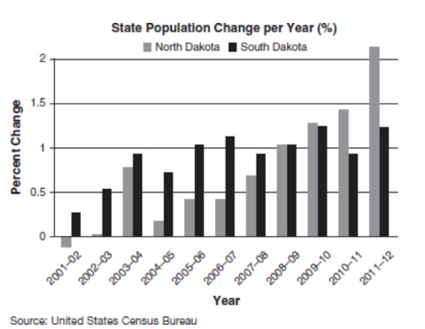
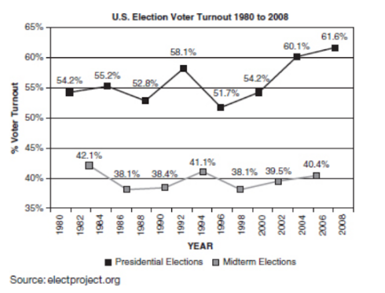

The women’s rights movement in the United States gained strength with the 1848 Seneca Falls Convention. The defining document of this gathering was the Declaration of Sentiments, which was patterned after the Declaration of Independence but focused on the fact that women lacked basic freedoms that men enjoyed. The revolutionary nature of the Seneca Falls Convention was apparent in the public’s response to the event. One newspaper described Seneca Falls as “the most shocking and unnatural event ever recorded in the history of womanity.”
The women’s rights movement in the United States gained strength with the 1848 Seneca Falls Convention. The defining document of this gathering was the Declaration of Sentiments, which was patterned after the Declaration of Independence but focused on the fact that women lacked basic freedoms that men enjoyed. The revolutionary nature of the Seneca Falls Convention was apparent in the public’s response to the event. One newspaper described Seneca Falls as “the most shocking and unnatural event ever recorded in the history of womanity.”
The invention of the cotton gin by Eli Whitney in 1784 revolutionized the cotton industry in the American South. The separation of the cotton seeds and fibers, once a painstaking task that slaves performed by hand, could now be done quickly by machine. This made cotton goods more affordable, thereby increasing international demand for these goods and, consequently, the profits of cotton farmers. Ironically, however, the cotton gin did not reduce the South’s reliance on slavery. In fact, with the boom of the cotton industry, more slaves were used to pick the cotton at a faster rate to keep up with the increasing demand for cotton.
The graph below shows the percent increase, year by year, in the populations of each of North Dakota and South Dakota over eleven years.
The graph below shows the percent increase, year by year, in the populations of each of North Dakota and South Dakota over eleven years.
The chart above shows the percentage of registered voters who voted in presidential and midterm elections from 1980 to 2008.
1. According to the Census Bureau's data on the graph, it can be concluded that the onset of World War II contributed to which change in the U.S. unemployment rate?
2. According to the graph, the most significant and uninterrupted change in the U.S. unemployment rate between 1926 and 1946 occurred immediately after
3. Which of the following statements based on the passage is an opinion, not a fact?
4. Which of the following states the main idea of the passage above?
5. Which of the following conclusions is supported by this map?
6. The map above could be used to disprove which of the following claims?
7. Which of the following conclusions is supported by the passage?
8. According to the graph, approximately how much greater was the increase in the number of cotton bales produced between 1840 and 1860 than the increase in the number of slaves during the same interval?
9. Which of the following statements about the eleven-year period is supported by the graph provided?
10. Based on the graph provided, the average percent increase in population per year for North Dakota was ______ the average percent increase in population per year for South Dakota for the period shown.
11. The average voter turnout for midterm elections is approximately _______ of the average voter turnout for presidential elections.
12. According to the chart, from 2005 to 2009, the median tax rate for households in the middle incomes quintile was